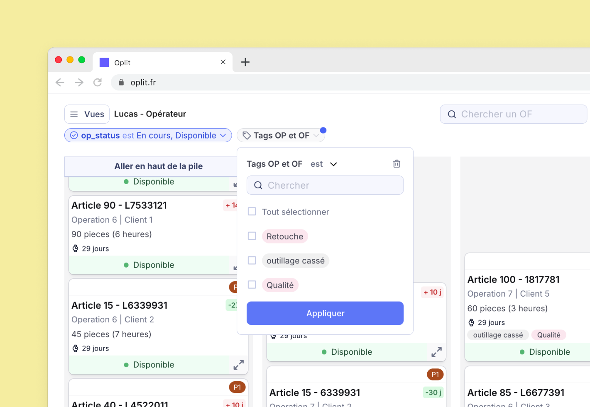
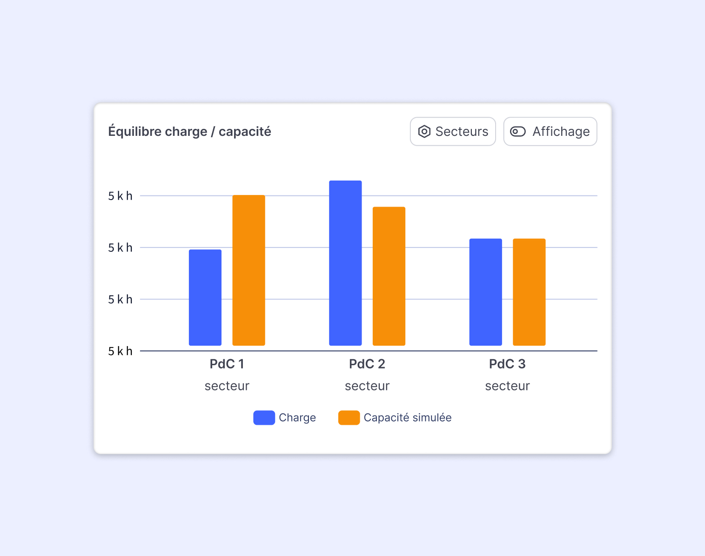
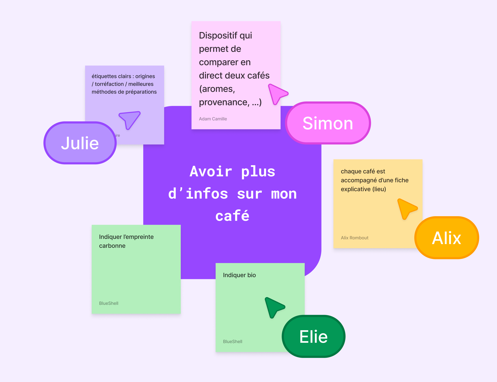
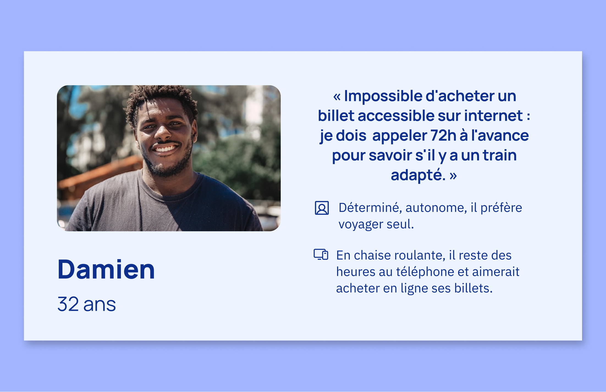
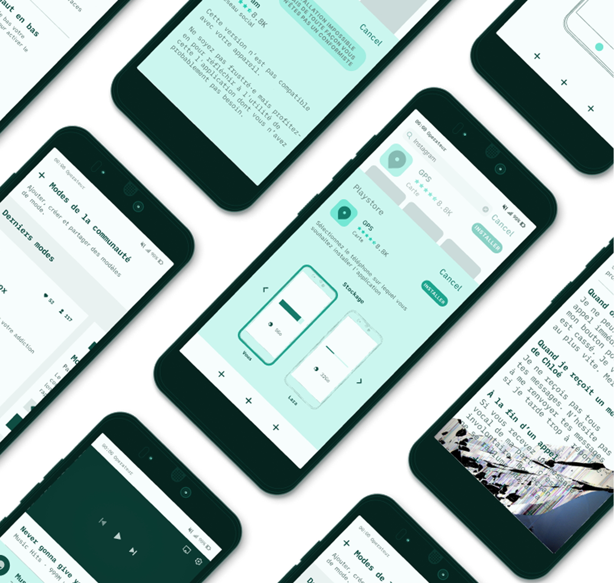

UX research et conception d'interfaces B2B. Je travaille à la jonction entre la compréhension des utilisateurs et la conception de produits complexes, utiles et bien pensés.





Je suis Camille, product designer basée à Paris. Je conçois des interfaces pour des contextes complexes, comme le SaaS industriel et les outils métier, en m'appuyant sur une pratique rigoureuse de la recherche utilisateur.
CV ↗